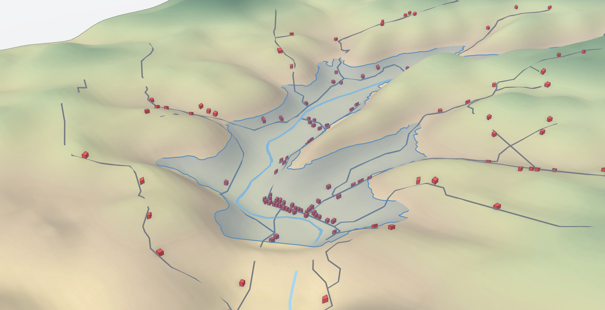

Legacy of the NYC Reservoir System
New York City has a system of 19 reservoirs to provide drinking water to its citizens. As part of a research project investigating the impact of the reservoir construction on the local communities, I worked to map building damage and removal using historic maps as well as on-site surveying with GPS.
Project Details / Background
In the summer of 2022, I was a research fellow at Vassar College’s Undergraduate Research Summer Institute working under Professor April Beisaw in the Anthropology department. The project brief was to investigate the connection between the creation of the New York City reservoir system and the culture of destruction in the communities around the waterbodies. My part of the project was to map buildings that were removed or destroyed as part of reservoir creation and to see if any of these foundations still remained on the New York City (NYC) Department of Environmental Protection (DEP) land surrounding the Neversink, Rondout, and Ashokan reservoirs.
I created a map of all of local hydrology, the reservoirs, their watersheds, and NYC water transportation infrastructure. On top of these layers I added property owned by the NYC DEP that lies within the basins and using historic maps (USGS and Sandborn Insurance Maps), I mapped the footprint of buildings from before, during, and after reservoir construction. These date ranges are unique to each reservoir. Using these maps, I was able to walk to many of the foundations listed on DEP property using GPS to confirm the accuracy of the georeferencing. All of this work and research was aggregated into an ArcGIS Storymap page as well as presented at the New York State Archaeological Conference in 2023.
Along with the cumulative map, to better visualize the flooding of a valley, I created a 3D model of the Neversink Reservoir in Neversink, NY. I used NYS DEM data and NYC DEC reservoir bathymetry data to create the model of the landscape and the water level. The buildings present are from data collected from Sanborn Insurance maps and field work to the site.
Image Gallery

3d model of the Neversink Reservoir